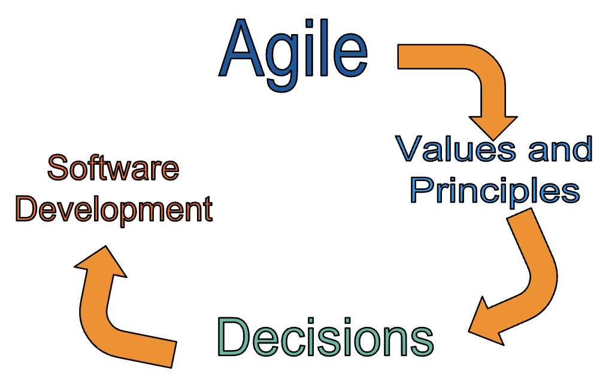
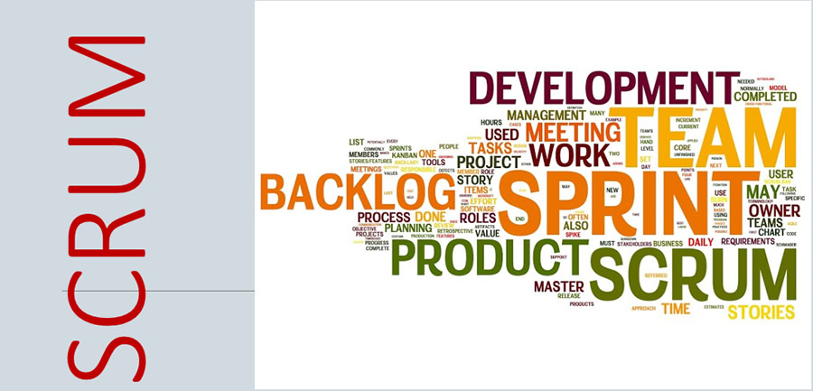
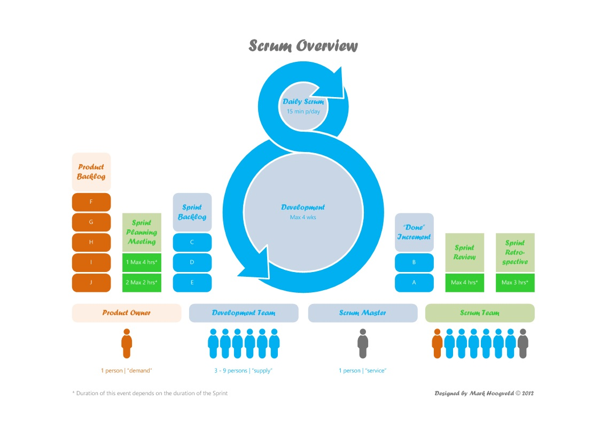

Agile Basics

Shannon Bertucci
Ruby, Javascript, Engineering Mentor
shannon.io
Welcome!
Tell us about yourself.
- Who are you?
- Where are you in the program?
- What track are you in ?
- What is Agile?
- Do you want to participate in the project?
What we will cover today
- Agile and Scrum
- Scrum Events
- Writing User Stories
- Pointing
- Agile Culture
What is Agile?
A set of values and principles
Agile Principles
- Our highest priority is to satisfy the customer through early and continuous delivery of valuable software.
- Welcome changing requirements, even late in development. Agile processes harness change for the customer's competitive advantage.
- Deliver working software frequently, from a couple of weeks to a couple of months, with a preference to the shorter timescale.
- Business people and developers must work together daily throughout the project.
- Build projects around motivated individuals. Give them the environment and support they need, and trust them to get the job done.
- The most efficient and effective method of conveying information to and within a development team is face-to-face conversation.
Agile Principles, Cont...
- Working software is the primary measure of progress.
- Agile processes promote sustainable development. The sponsors, developers, and users should be able to maintain a constant pace indefinitely.
- Continuous attention to technical excellence and good design enhances agility.
- Simplicity--the art of maximizing the amount of work not done--is essential.
- The best architectures, requirements, and designs emerge from self-organizing teams.
- At regular intervals, the team reflects on how to become more effective, then tunes and adjusts its behavior accordingly.
Scrum
Scrum
Scrum
Consider flying from point A to point B
- Our customer is our pilot
- Enters destination in GPS
- Can do mid-course corrections
- Product Owner is the GPS System
- Gives direction
- Estimates arrival time
Scrum
- Team is the airplane
- Supply the power
- Follows directions from the pilot
- If broken the directions no longer matter!
- Scrum Master is the autopilot
- Helps the team control speed as appropriate
- Helps the team follow directions
- Interacts with GPS when changes need to be made
Scrum Events
- Two Week Sprints
- Daily Standup
- Backlog Grooming
- Sprint Planning
- Team Retro
User Story Writing
“As a ___, I want ____, so that ___”
User Story Writing
Acceptance Criteria
- Verify a user is not charged for same-day cancellation
- Verify a cancellation email is sent
- Verify the hotel is notified of the cancellation
Pointing
Questions?
?